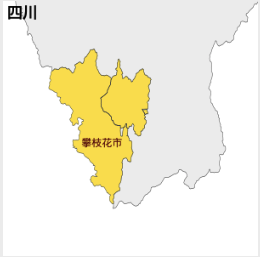
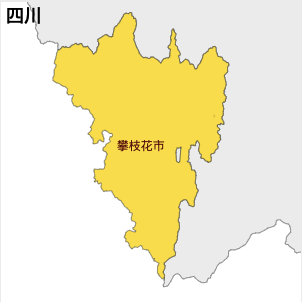

如何消除攀枝花市的内部边界
问题地图：

修正之后的地图：

做法很简单：把攀枝花市的单拿出来，给内部边界抹掉，再放回四川地图就好了。
具体细节：
- 先用
mapmaker的split命令把echarts/map/json/province/sichuan.json给拆了。 - 然后解压缩
decompress 攀枝花市.geojson d_pan.geojson - 消除内部边界:
mapshaper d_pan.geojson -dissolve2 -o d_pan_shape_only.geojson - 这时候， d_pan_shape_only.geojson是不能直接给
echarts用的。它喝了孟婆汤。 - 用
mapmaker的这个命令：shaper2echarts d_pan_shape_only.geojson d_pan_shape_only_echarts.geojson 攀枝花市 - 注意，这个geojson是没有压缩的，会比较大。现在我们压缩一下:
compress d_pan_shape_only_echarts.geojson utf_encoded_pan_shape_only.geojson - 最后，让我们把它放回去：
merge echarts/map/json/province/sichuan.json utf_encoded_pan_shape_only.geojson - 在你的当前目录就会出现：
merged_sichuan.json - 如果你想进一步做一个 js 文件的话，可以运行：
makejs merged_sichuan.json sichuan.js 四川